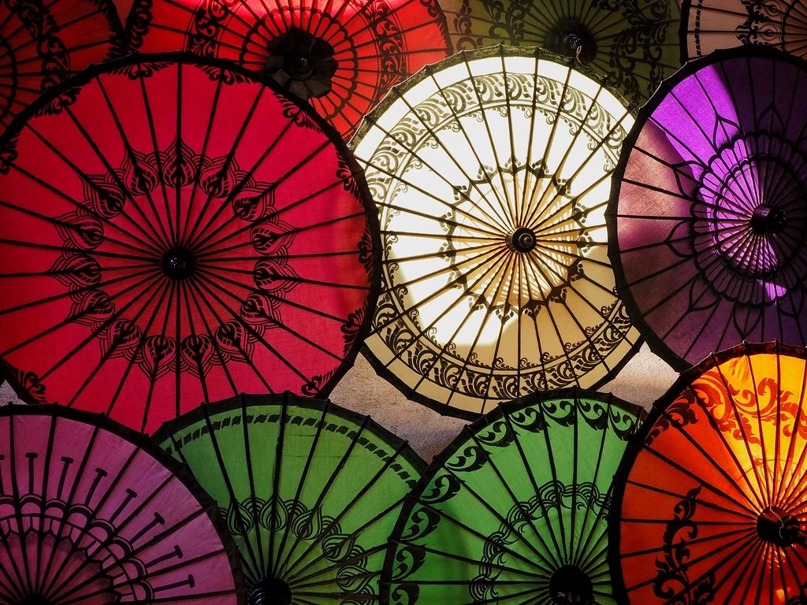
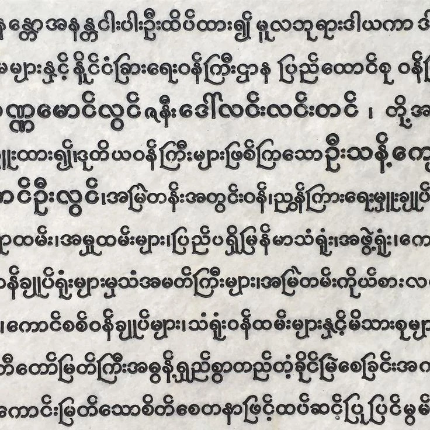

CULTURAL JOURNAL / MYANMAR
BEYONDMYANMAR.
不止於印象，看見緬甸。
從臉上的一抹香木粉，到迎接新年的一場水花。穿過風景，走進緬甸真實而多樣的文化日常。
從 Thanaka 開始探索↗01 — 06STORIES OF MYANMAR
SCROLL TO DISCOVER↓
01關於這片土地的故事
01 / THANAKA
THE EVERYDAY BEAUTY
一抹香木粉，<br>一段生活記憶。
在許多緬甸人的臉頰上，文化不是陳列品，而是一道每天都能看見的淡金色印記。
從一個熟悉的日常習慣，走近緬甸的美、情感與文化。
閱讀 Thanaka 故事 ↗01日常文化
Thanaka｜一抹香木粉的日常
在許多緬甸人的臉頰上，文化不是陳列品，而是一道每天都能看見的淡金色印記。
探索故事↗
 02
02飲食記憶
Mohinga｜一碗緬甸的早晨
一碗魚湯米線，盛著香氣、早餐的忙碌，以及不同家庭記憶中的味道。
探索故事↗
 03
03節慶習俗
Thingyan｜一場水花迎新年
節日裡的水不只是熱鬧，也象徵告別舊的一年，迎接新的開始。
探索故事↗
04
歷史遺產
Bagan｜時間留下的風景
當晨光照在古老的佛塔上，建築成了一段可以步行走近的歷史。
探索故事↗

05藝術表演
Traditional Arts｜傘影與木偶的故事
一把彩繪工藝傘、一尊舞台木偶，讓我們看見緬甸手工藝與表演藝術的不同面貌。
探索故事↗

06語言文字
Myanmar Language｜從一句問候開始
一句「မင်္ဂလာပါ」，是向陌生世界打開的一扇門。
探索故事↗
WORDS / VOICES
從一句問候開始。
聽聽緬甸語的日常問候與詞彙。點擊音符，播放本站提供的語音錄製。
01
မင်္ဂလာပါ
Mingalaba你好／您好
02
ကျေးဇူးတင်ပါတယ်
Kyeizu tin ba de謝謝
03
နေကောင်းလား
Nay kaung lar你好嗎？
04
မြန်မာ
Myanmar緬甸